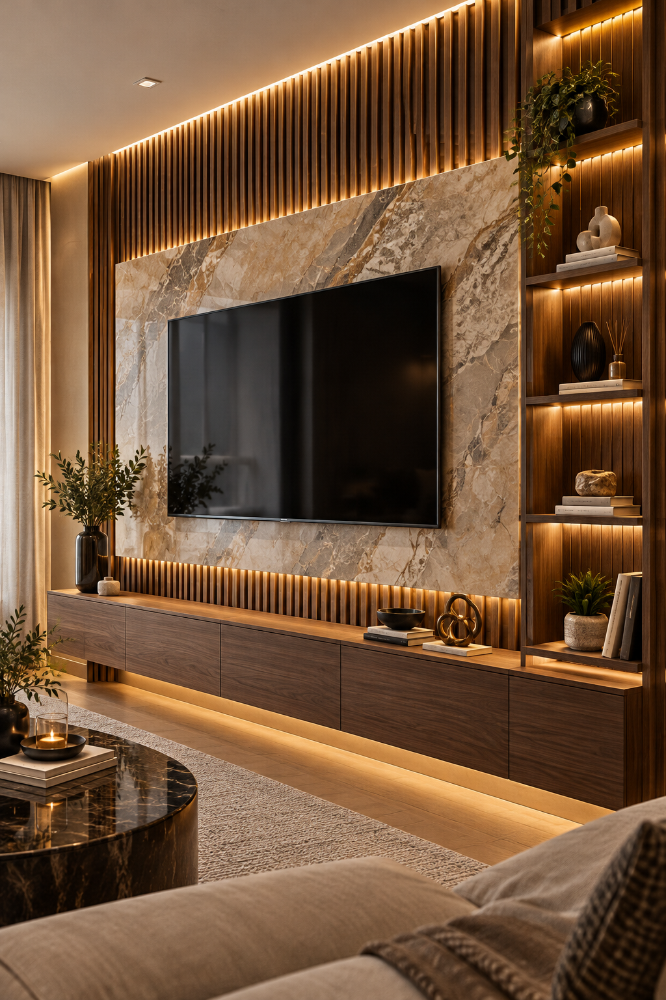
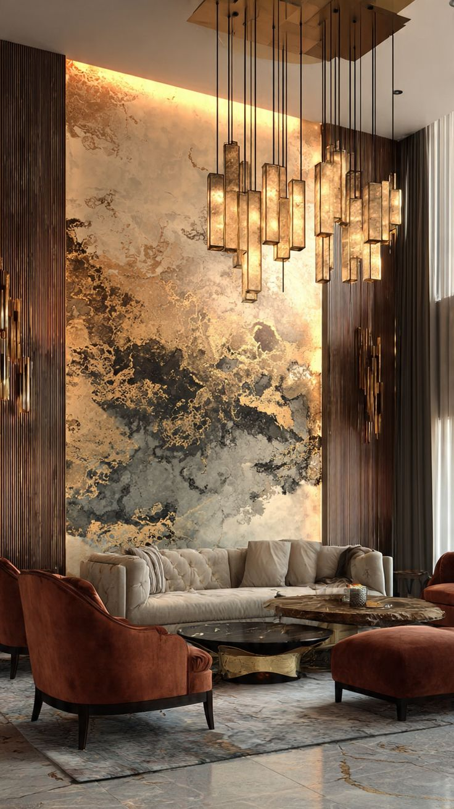
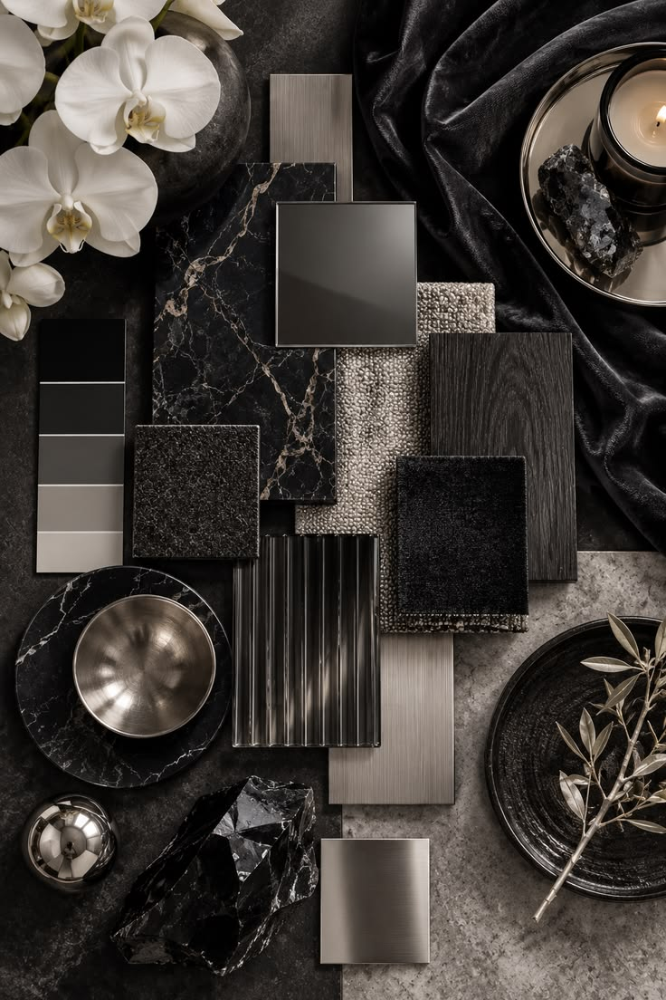
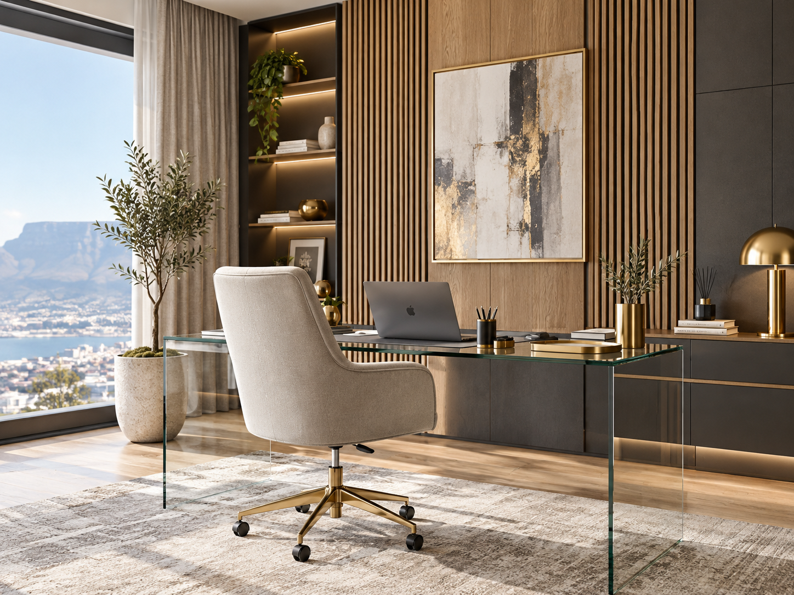

Luxury Interior Design · Cape Town
Spaces with
presence.
Refined interiors shaped by material, proportion, light and detail.
Armani Interiors
Luxury, considered.
Residential interiors, workspaces, staging and architectural surface treatments — brought together with a clear visual direction.
About Armani InteriorsSelected Visuals
Material, light, texture.
A considered selection of spaces, finishes and atmospheres that define the Armani Interiors visual language.




A visual language
Spaces with character.
Material, light and proportion working together across residential and professional environments.

Workspaces
Professional spaces with character.
Office, reception and commercial environments benefit from the same attention to materiality, lighting and detail.



StoneWalnutGraphiteGoldLinenSage
Mood / Sample Boards
A visual brief you can feel.
Fifteen distinct material directions bring palettes, textures and finish selections together.
Explore 15 ConceptsBegin a project
Your space, refined.
Tell us what you are creating, renovating or preparing.
Start on WhatsApp